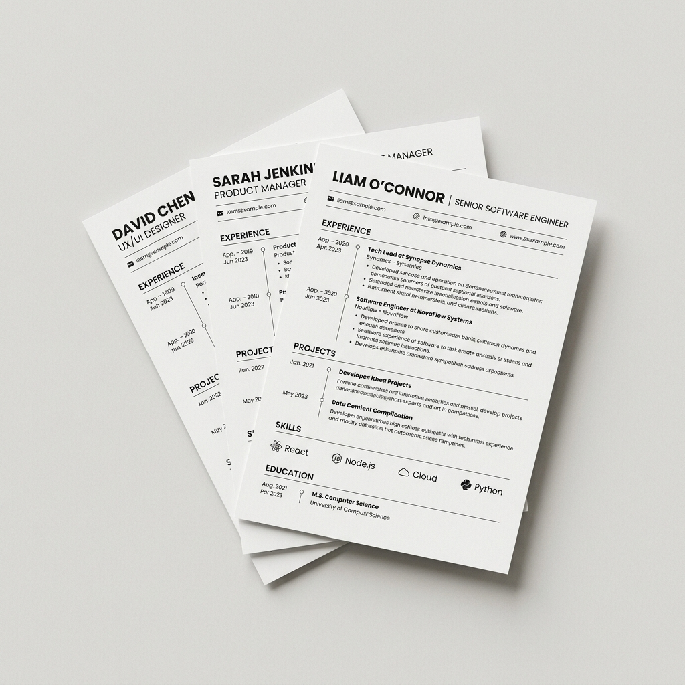
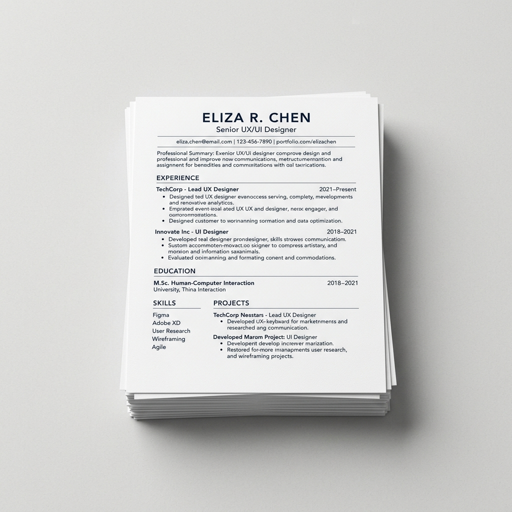

ATS Friendly 👍
100+ Template Resume
Cipta Resume Percuma
Mudah Dan Pantas
Bina Resume Profesional & Siap Dalam 5 Minit
Dapatkan kerjaya impian anda dengan resume yang kemas, moden, dan mesra ATS. 100% percuma, tanpa login, dan boleh dimuat turun serta-merta.


Pilih Template Mengikut Kerjaya Anda
Klik pada mana-mana template untuk mula mengisi maklumat anda secara percuma.